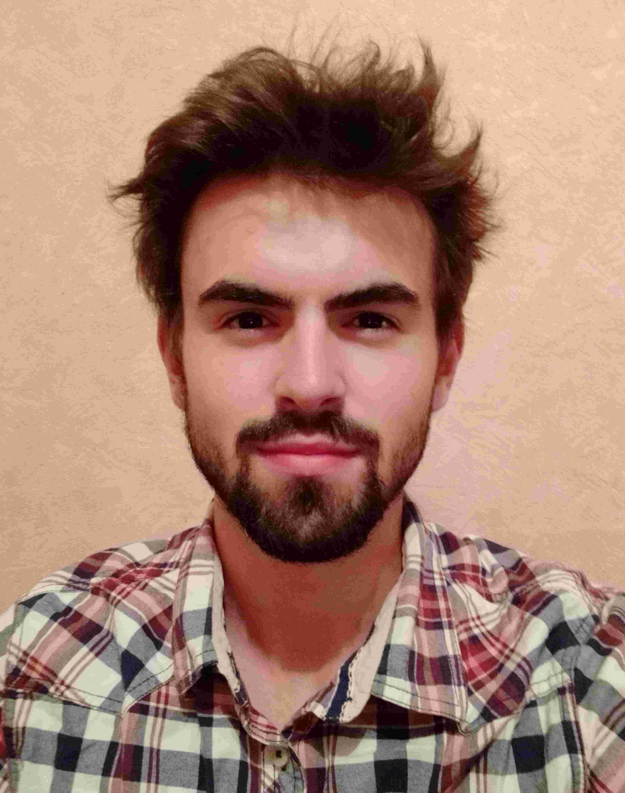

Gautier Mechaussie
Étudiant en deuxième année de DUT Informatique
À propos
Formation
DUT Informatique - 2018/2020
Baccalauréat Général, Série Scientifique, option Mathématique
Compétences
- JAVA :
- C++ :
- HTML5 :
- CSS3 :
- MySQL :
- JS :
- PHP :
Expériences professionnelles et bénévoles
- Emploi Saisonnier, Employé commercial Intermarché, Neuvic - 19
- Emploi Saisonnier, Junior Club House, Liginiac - 19
- Bénévolat via Workaway dans un centre de conservation pour chevaux Skyriens en voie d'extinctions, Mouries Farm, Skyros, Grèce
Mes projets
Contact